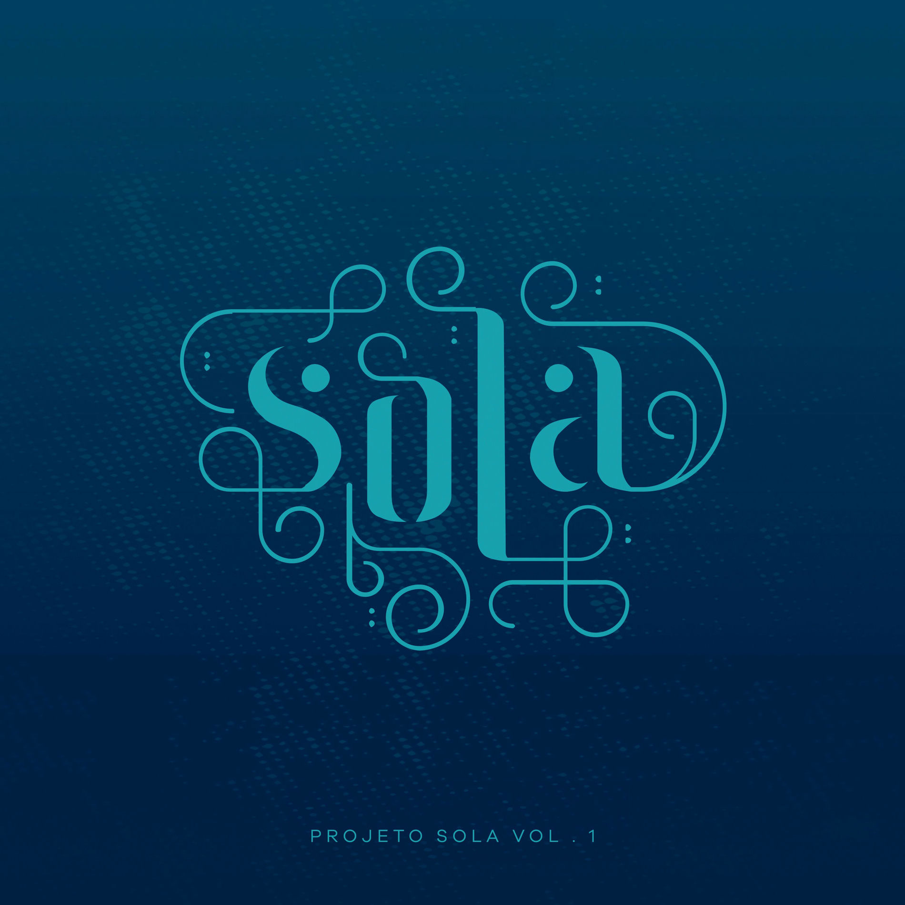

Contexto
Trata-se de uma banda formada por dois integrantes principais, Guilherme Andrade e Guilherme Iamarino
Ambos moradores de São Paulo, formaram aquilo que hoje é conhecida como uma das maiores bandas reformadas do país
História de surgimento
Ambos vocalistas da banda conheceram-se pela primeira vez em um Rock Festival local.
Sendo os dois compositores solo que apresentaram-se no festival, acabaram conversando no camarim enquanto preparavam-se para suas performances no palco
Tornando-se amigos, ao longo do tempo, decidiram largar a carreira solo e formar uma banda
Como primeiro nome para ela, pensaram em chamá-la unicamente de Sola. Contudo, aconteceu que, ao tentar criar o primeiro perfil da banda em uma rede social (Facebook), o website não permitia nomes pequenos.
Foi daí que adicionaram o nome "Projeto", posteriormente tornando-se nome oficial da banda não intencionalmente a medida que tornavam-se famosos